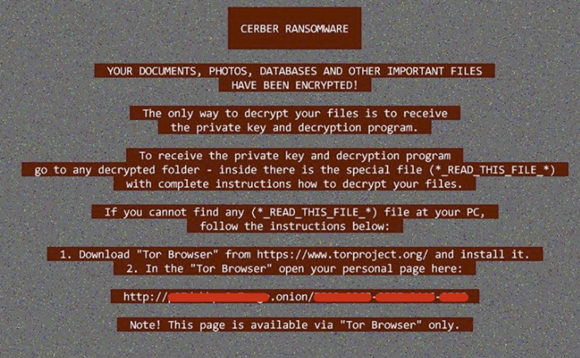

What Is Ransomware?
Ransomware is a type of malware that blocks access to a computer and/or encrypts its files, making them impossible to open without the proper decryption key! The attacker then demands money from the victim in exchange for supposedly 'restoring' access. Basically, they hold someone's files hostage and demand payment to give them back! Some ransomware attacks even threaten you with certain reused phrases if you don't pay, such as "I have all of the power to ruin your life" or "I will leak your private information to the public if you don't pay this fee." It is important to note that not only is paying the ransom not guaranteed to work, but that sometimes the attacker does not even have the access to the files and data they are threatening to leak and are just trying to scare the victim into paying!
What Can Ransomware Do?
Ransomware can cause some pretty serious damage, especially when important files or entire networks are affected. Depending on the attack, it can:
- Encrypt personal files, photos, and documents.
- Lock users out of their computers.
- Steal private information.
- Disrupt businesses and important services.
How Does an Attack Work?
01. Infection
Ransomware gets onto a device, often through a malicious email attachment, download, or security vulnerability.
02. Encryption
The malware encrypts files, preventing the user from opening or accessing their own data.
03. Ransom Demand
A message appears demanding payment in exchange for a decryption key, and attackers may threaten to leak stolen information if you do not comply!
How Can You Stay Protected?
One of the best ways to protect yourself from ransomware is to keep backups of important files. You should also avoid suspicious email attachments, keep your software updated, and use trusted security software. Having backups can make a huge difference if an attack ever happens, since you may be able to recover your files without paying the attacker!

A photo showing how ransomware locks away a user's files and prevents access to them.